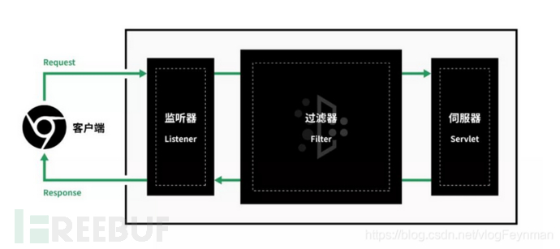
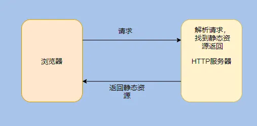
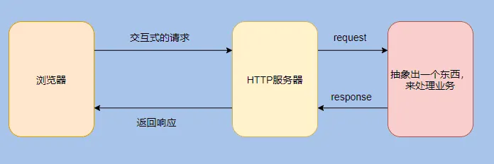
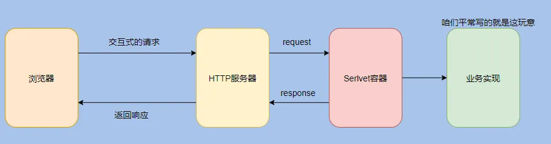
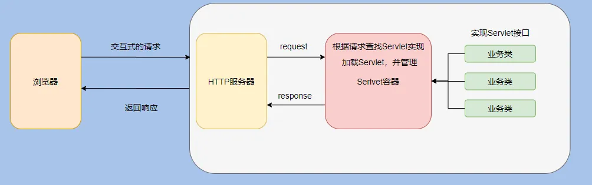
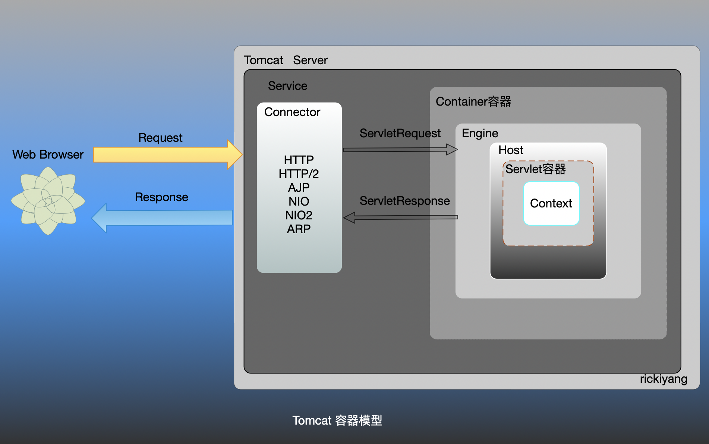

JavaWeb三大组件指的是：Servlet 程序、Filter 过滤器、Listener 监听器 下面是三大组件之间的关系

Servelt
一、Servelt的产生
首先，用户通过浏览器像服务器端发送HTTP请求，在早期发展的时候只会请求一些静态资源，这个时候服务器需要处理HTTP请求，向用户发送静态资源，这个服务器就是HTTP服务器。

简单点说就是解析请求，然后得知需要服务器上面哪个文件夹下哪个名字的静态文件，找到返回即可。 而随着互联网的发展，交互越发得重要，单纯的静态文件满足不了需求。 业务变得复杂，需要我们编写代码来处理诸多业务。 需要根据 HTTP 请求调用不同的业务逻辑来响应，但是我们的业务代码不能跟 HTTP 服务器耦合起来。 总不能在 HTTP 服务器的具体实现里面来做判断到底需要调用哪个业务类吧？ 这就把非业务和业务强相关了。 所以需要做一层抽象，将 HTTP 的解析和具体的业务隔离。
本质上的需求就是根据 HTTP 请求找到对应的业务实现类然后执行逻辑再返回。 而业务千千万，所以需要规定一个接口，所以业务类都实现这个接口这样才好对接。 这就是接口的含义，就像 USB。 这个接口就是 Servlet，当然这是最狭义的解释。 Servlet 其实是 Server Applet，全称 Java Servlet，指的是用Java 编写的服务端程序。 其实指代的是实现 Servlet 接口的那些业务类。 这就是 Servlet 的由来。 而 Servlet 容器其实就是用来管理和加载这些 Servlet 类的，根据 HTTP 请求找到对应的 Servlet 类这就是 Servlet 容器要做的事情。 看到这是不是觉得还能再抽一层？因为这好像也和具体的业务实现没关系？ 是的，还能抽一层。 没必要把 Servlet 容器做的事情和具体的业务耦合起来，业务反正照着 Servlet 接口实现就行，这样 Servlet 容器就可以加载它和管理它
把请求和哪个 Servlet 对应关系也抽象出来，就是 web.xml 了，咱们在配置里面告诉 Servlet 容器对应关系即可。 我图中的业务实现其实对应的就是我们平常的 war 包，这就是业务和 Servlet 容器的解耦。 想必你也听过 Servlet 规范，其实 Servlet 接口和 Servlet 容器这一整套包括目录命名啊啥的合起来就叫 Servlet 规范。 所有相关的中间件按照 Servlet 规范实现，我们也按 Servlet 规范来实现业务代码，这样我们就能在不同场景选择不同的 Web 中间件。 反正规范的目的就是为了对接方便，减少对接成本。 至此 HTTP 服务器、Servlet 、Servlet 容器想必都清晰了。 而 Web 容器其实就是 HTTP 服务器 + Servlet 容器，因为单单 Servlet 容器没有解析 HTTP 请求、通信等相关功能。 所以把 Tomcat、Jetty 等实现包含了 HTTP 服务器和 Servlet 容器的功能，称之为 Web 容器。 从我们的分析一层一层的剥离，一层一层的抽象，相信你对 Web 有了更进一步的认识，我再画个 Tomcat 的分析图，应该就很清晰了。
从上面的一步步分析可以看出：其实架构的设计就是一系列相关的抽象。 先是抽象出 HTTP 服务，用来通信和解析协议。 再因为业务的复杂，为了不和 HTTP 服务耦合又抽象了一层 Servlet。 由 Servlet 加载和管理 Servlet ，来控制请求转发到指定的 Servlet 实现类。 然后我们安心的开发业务即可。 因为抽象所以灵活易扩展，比如现在是 HTTP1.1 服务，可以换成 HTTP 2。 现在用 Tomcat 来作为 Servlet 容器，也可以换成 Jetty。 现在用原生的实现 Servlet 来做业务，也可以换成 SpringMVC。 随意变更，因为都抽象出来了，就很好替换，只要遵循约定的接口实现即可二、Servelt和Servelt容器
servelt
Servlet是JavaEE规范（接口）之一；
Servlet是运行在服务器(Web容器Tomcat等)上的一个 java 小程序，它用来接收客户端发送过来的请求进行处理，并响应数据给客户端。
Servlet及相对的对象，都由Tomcat创建，我们只是使用。
Servlet需要完成3个任务：
- 接收请求：将客户端发送过来的请求封装成ServletRequest对象（包含请求头、参数等各种信息）
- 处理请求：在service方法中接收参数，并且进行处理请求。
- 数据响应：请求处理完成后，通过转发（forward）或者重定向（redirect）到某个页面。
web开发的本质就一句话：客户端和服务器交换数据。于是你使用 Java 的 Socket 套接字进行编程，去处理客户端来的 tcp 请求，经过编解码处理读取请求体，获取请求行，然后找到请求行对应的处理逻辑步入服务器的处理中，处理完毕把对应的结果返回给当前的 Socket 链接，响应完毕，关闭 Socket。
以上过程，你有没有发现其实是两个部分：
- 建立连接，传输数据，关闭连接，你肯定知道这些步骤不是你所开发的web服务去处理的，而是tomcat容器帮你做了这些事情。
- 拿到请求行之后去找对应的 url 路由，这一部分是谁做的呢？在如今 SpringBoot 横行的时代，去配置化已经成为趋势，编程越来越简单导致的后果就是越来越难以理解事物最开始的样子。还记得 SpringMVC工程中的 web.xml文件吗？是否还记得在web.xml中有这么一段配置呢：
<servlet>
<servlet-name>SpringMVC</servlet-name>
<servlet-class>org.springframework.web.servlet.DispatcherServlet
</servlet-class>
<init-param>
<param-name>contextConfigLocation</param-name>
<param-value>classpath*:/spring/SpringMVC-servlet.xml</param-value>
</init-param>
<load-on-startup>1</load-on-startup>
</servlet>
<servlet-mapping>
<servlet-name>SpringMVC</servlet-name>
<url-pattern>/</url-pattern>
</servlet-mapping>Spring 的核心就是一个 Servlet,它拦截了所有的请求,将请求交给 DispatcherServlet 去处理。
我们再来问一遍，Servlet 到底是什么，它就是一段处理 web 请求的逻辑，并不是很高深的东西。
再来看 Java 中的 Servlet，它只是一个接口：
package javax.servlet;
import java.io.IOException;
public interface Servlet {
public void init(ServletConfig config) throws ServletException;
public ServletConfig getServletConfig();
public void service(ServletRequest req, ServletResponse res)
throws ServletException, IOException;
public String getServletInfo(); public void destroy();
}Servlet 接口规定请求从容器到达 web 服务端的规范，最重要的三个步骤是:
- init()：初始化请求的时候要做什么；
- service()：拿到请求的时候要做什么；
- destory()：处理完请求销毁的时候要做什么。
所有实现 Servlet 的实现方都是在这个规范的基础上进行开发。那么 Servlet 中的数据是从哪里来的呢？答案就是 Servlet 容器。容器才是真正与客户端打交道的那一方。Servlet容器只有一个，而 Servlet 可以有多个。常见的Servlet容器Tomcat,它监听了客户端的请求端口,根据请求行信息确定将请求交给哪个Servlet 处理，找到处理的Servlet之后，调用该Servlet的 service() 方法，处理完毕将对应的处理结果包装成ServletResponse 对象返回给客户端。
Servlet 容器
上面说过，Servlet 只是一个处理请求的应用程序，光有Servlet是无法运行起来的，需要有一个 main 方法去调用你的这段 Servlet 程序才行。所以这里出现了Servlet 容器的概念。Servlet容器的主要作用是：
- 建立连接；
- 调用Servlet处理请求；
- 响应请求给客户端；
- 释放连接；
这上面的四步，如果是你来设计的话是否可以用一个模板方法搞定，1，3，4都是固定的步骤，不会因为请求不同而有很大的变化。2却会因为对应的请求不同需要业务逻辑自己去实现不同的处理。所以这里抽象出来了 Servlet，Servlet想怎么玩就怎么玩，这是你自己的事情。容器帮你做的是你不想做的脏活累活。
另外，既然叫做容器肯定是能装多个Servlet，并且可以管理Servlet的生命周期。这些功能应该是容器必备的。
上面提到了 web.xml 中的 DispatcherServlet，它是 Spring 中定义的一个 Servlet，实现了 Servlet 接口，本质也是一个 Servlet。只是它是 HttpServlet 的继承者，主要处理 http 请求。所以 Spring 程序本质是就是一个 Servlet。SpringMVC 帮你做了本该你去实现的逻辑，你看不到并不代表它不是。
好啦，以上通俗的语言解释了什么是 Servlet，什么是 Servlet 容器，以及 Servlet 和 Servlet 容器之间的关系。
servelt工作流程
客户端发起一个 http 请求，比如 get 类型。
Servlet 容器接收到请求，根据请求信息，封装成 HttpServletRequest 和HttpServletResponse 对象。这步也就是我们的传参。
Servlet容器调用 HttpServlet 的 init() 方法，init 方法只在第一次请求的时候被调用。
Servlet 容器调用 service() 方法。
service() 方法根据请求类型，这里是get类型，分别调用doGet或者doPost方法，这里调用doGet方法。
doXXX 方法中是我们自己写的业务逻辑。
业务逻辑处理完成之后，返回给 Servlet 容器，然后容器将结果返回给客户端。
容器关闭时候，会调用 destory 方法。 用代码表示如下：
package tomcatShell.Servlet;
import javax.servlet.*;
import javax.servlet.annotation.WebServlet;
import java.io.IOException;
// 基础恶意类
@WebServlet("/servlet")
public class ServletTest implements Servlet {
@Override
public void init(ServletConfig config) throws ServletException {
}
@Override
public ServletConfig getServletConfig() {
return null;
}
@Override
public void service(ServletRequest req, ServletResponse res) throws ServletException, IOException {
}
@Override
public String getServletInfo() {
return null;
}
@Override
public void destroy() {
}
}Servelt生命周期
1）服务器启动时 (web.xml 中配置 load-on-startup=1，默认为 0)或者第一次请求该 servlet 时，就会初始化一个 Servlet 对象，也就是会执行初始化方法 init(ServletConfig conf)。
2）servlet 对象去处理所有客户端请求，在 service(ServletRequest req，ServletResponse res) 方法中执行
3）服务器关闭时，销毁这个 servlet 对象，执行 destroy() 方法。
4）由 JVM 进行垃圾回收。
Filter
filter 也称之为过滤器，是对 Servlet 技术的一个强补充，其主要功能是在 HttpServletRequest 到达 Servlet 之前，拦截客户的 HttpServletRequest ，根据需要检查 HttpServletRequest，也可以修改 HttpServletRequest 头和数据；在 HttpServletResponse 到达客户端之前，拦截 HttpServletResponse ，根据需要检查 HttpServletResponse，也可以修改 HttpServletResponse 头和数据。
- 其实这个地方，我们想办法在 Filter 前自己创建一个 filter 并且将其放到最前面，我们的 filter 就会最先执行，当我们在 filter 中添加恶意代码，就会进行命令执行，这样也就成为了一个内存 Webshell
Tomcat
简单理解，tomcat是http服务器+servlet容器。
Tomcat 作为Servlet容器,将http请求文本接收并解析，然后封装成HttpServletRequest类型的request对象，传递给servlet；同时会将响应的信息封装为HttpServletResponse类型的response对象，然后将response交给tomcat，tomcat就会将其变成响应文本的格式发送给浏览器。

Java web 应用如果部署到 Tomcat 中，一个Tomcat就表示一个服务。一个 Server 服务器可以包含多个 Service 服务，Tomcat 默认的 Service 服务是 Catalina，而一个 Service 服务可以包含多个连接器，因为 Tomcat 支持多种网络协议，包括 HTTP/1.1、HTTP/2、AJP 等等，一个 Service 服务还会包括一个容器，容器外部会有一层 Engine 引擎所包裹，负责与处理连接器的请求与响应，连接器与容器之间通过 ServletRequest 和 ServletResponse 对象进行交流。 Tomcat容器的设计提现在一个核心文件中：server.xml。这个文件充分展示了Tomcat的高度抽象设计：<Server port="8005" shutdown="SHUTDOWN">
<Service name="Catalina">
<Connector port="8080"
protocol="HTTP/1.1"
connectionTimeout="20000"
redirectPort="8443"/>
<Connector port="8009" protocol="AJP/1.3" redirectPort="8443"/> <Engine name="Catalina" defaultHost="localhost">
<Host name="localhost" appBase="webapps"
unpackWARs="true" autoDeploy="true">
</Host>
</Engine>
</Service>
</Server>其中：
- Server 组件是管理 tomcat 实例的组件，可以监听一个端口，从此端口上可以远程向该实例发送 shutdown 关闭命令。
- Service 组件是一个逻辑组件，用于绑定 connector 和 container，有了 service 表示可以向外提供服务，就像是一般的 daemon 类服务的 service。可以认为一个 service 就启动一个JVM，更严格地说，一个 engine 组件才对应一个 JVM （定义负载均衡时，jvmRoute 就定义在 Engine 组件上用来标识这个 JVM ），只不过 connector 也工作在 JVM 中。